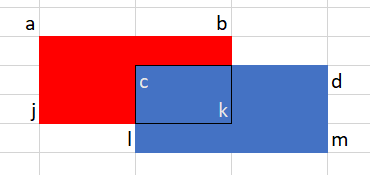

intmain(){ int _; scanf("%d", &_); while (_--) { int n; scanf("%d", &n); int a[MAXN], b[MAXN]; int pa = 0, pb = 0; for (int i = 0; i < n; ++i) { int x; scanf("%d", &x); if (x % 2) a[pa++] = x; else b[pb++] = x; } for (int i = 0; i < pa; ++i) printf("%d%c", a[i], (i + 1 < pa ? ' ' : '\n')); for (int i = 0; i < pb; ++i) printf("%d%c", b[i], (i + 1 < pb ? ' ' : '\n')); } return0; }
B. 约分最简分式
标签： 数学
读入后，求解 a 和 b 的最大公约数，输出 a 和 b 分别除以最大公约数的结果即可。
1 2 3 4 5 6 7 8 9 10 11 12 13 14 15 16
#include<bits/stdc++.h> usingnamespacestd;
intmain(){ ios::sync_with_stdio(false); cin.tie(nullptr); int _; cin >> _; while (_--) { char op; int a, b; cin >> a >> op >> b; int d = __gcd(a, b); cout << a / d << op << b / d << endl; } return0; }
1 2 3 4 5 6 7 8 9 10 11 12 13 14 15 16 17 18
#include<stdio.h>
intgcd(int a, int b){ if (b == 0) return a; return gcd(b, a % b); }
intmain(){ int _; scanf("%d", &_); while (_--) { int a, b; scanf("%d/%d", &a, &b); int c = gcd(a, b); printf("%d/%d\n",a / c, b / c); } return0; }
intmain(){ ios::sync_with_stdio(false); cin.tie(nullptr); int _; cin >> _; while (_--) { int n; cin >> n; vector<int> x(n), y(n); for (int i = 0; i < n; ++i) cin >> x[i]; for (int i = 0; i < n; ++i) cin >> y[i]; int a = *min_element(x.begin(), x.end()); int b = *min_element(y.begin(), y.end()); int c = *max_element(x.begin(), x.end()); int d = *max_element(y.begin(), y.end()); cout << (c - a) * (d - b) << endl; } return0; }
intmain(){ int _; scanf("%d", &_); while (_--) { int n; scanf("%d", &n); int x[MAXN], y[MAXN]; for (int i = 0; i < n; ++i) scanf("%d", x + i); for (int i = 0; i < n; ++i) scanf("%d", y + i); int a = 1000, b = 1000, c = -1000, d = -1000; for (int i = 0; i < n; ++i) { a = min(x[i], a); c = max(x[i], c); b = min(y[i], b); d = max(y[i], d); } printf("%d\n", (c - a) * (d - b)); } return0; }
D. 求矩形重叠的面积
标签：数学
两矩形重叠部分为一个新的矩形，可思考求解重叠部分矩形的长和宽。
我们把矩形的长和宽分别抽象到一维上。

对于以上情况通过观察可发现：
矩形重叠部分的长，也就是线段 $ab$ 和线段 $cd$ 重叠的长度，故重叠部分矩形的长为：$ab + cd - ad$
intmain(){ ios::sync_with_stdio(false); cin.tie(nullptr); int _; cin >> _; while (_--) { int xa, ya, la, wa; int xb, yb, lb, wb; cin >> xa >> ya >> la >> wa; cin >> xb >> yb >> lb >> wb; auto check = [&]() { int left = min(xa, xb); int right = max(xa + la, xb + lb); int l = la + lb - (right - left); int lo = min(ya - wa, yb - wb); int hi = max(ya, yb); int w = wa + wb - (hi - lo); if (l < 0 || w < 0) return0; return l * w; }; cout << check() << endl; } return0; }
intcheck(){ int left = min(xa, xb); int right = max(xa + la, xb + lb); int l = la + lb - (right - left); int lo = min(ya - wa, yb - wb); int hi = max(ya, yb); int w = wa + wb - (hi - lo); if (l < 0 || w < 0) return0; return l * w; }
intmain(){ int _; scanf("%d", &_); while (_--) { int n; scanf("%d", &n); char nums[MAXN][10]; for (int i = 0; i < n; ++i) scanf("%s", nums[i]); qsort(nums, n, sizeof(char) * 10, comp); for (int i = 0; i < n; ++i) printf("%s", nums[i]); printf("\n"); } return0; }
I. 字符串计数
标签： 字符串； 动态规划；
遍历字符串 $s$ , 当遇到 abadedde 里出现的字符时，对于 a, b, d, e 我们做不同的处理。 我们使用数组统计以下字符串出现的数量:
intmain(){ ios::sync_with_stdio(false); cin.tie(nullptr); int _; cin >> _; while (_--) { int n, m; cin >> n >> m; vector<vector<int>> mat(n, vector<int>(m)); vector<int> col(m); for (int i = 0; i < n; ++i) for (int j = 0; j < m; ++j) cin >> mat[i][j]; for (int i = 0; i < m; ++i) for (int j = 0; j < n; ++j) col[i] |= (mat[j][i] << j); int max_sum = 0; for (int i = (1 << n) - 1; i >= 0; --i) { int sum = 0; for (int j = 0; j < m; ++j) { int curr = __builtin_popcount(i ^ col[j]); sum += max(curr, n - curr); } max_sum = max(sum, max_sum); } cout << max_sum << endl; } return0; }
intmax(constint a, constint b){ return a > b ? a : b; }
intmain(){ int _; scanf("%d", &_); while (_--) { int n, m; scanf("%d %d", &n, &m); int mat[MAXN][MAXM], columns[MAXM] = {0}; for (int i = 0; i < n; ++i) for (int j = 0; j < m; ++j) scanf("%d", &mat[i][j]); for (int i = 0; i < m; ++i) for (int j = 0; j < n; ++j) columns[i] |= (mat[j][i] << j); int max_sum = 0; for (int state = (1 << n) - 1; state >= 0; --state) { int sum = 0; for (int i = 0; i < m; ++i) { int x = state ^ columns[i]; int curr = 0; while (x) { x &= (x - 1); curr++; } sum += max(curr, n - curr); } max_sum = max(sum, max_sum); } printf("%d\n", max_sum); } return0; }